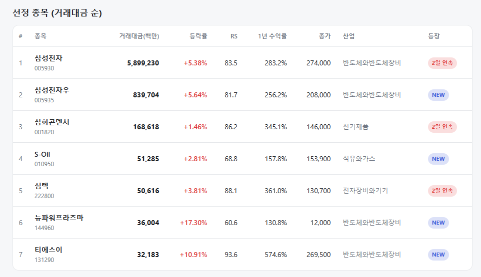
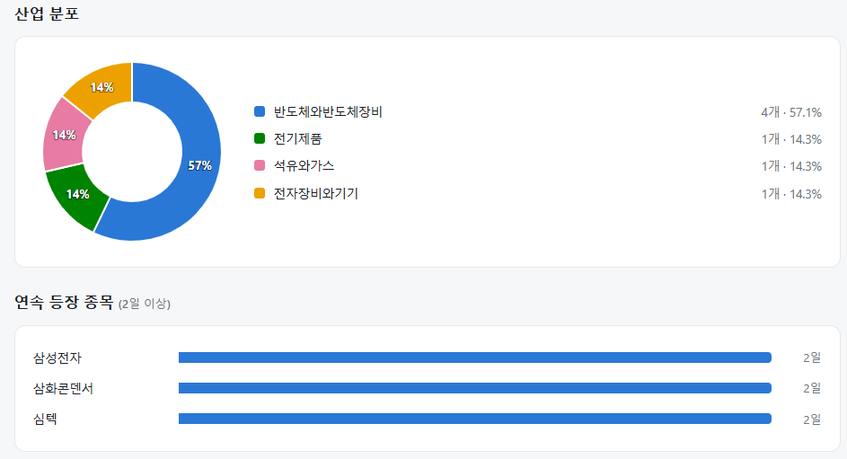
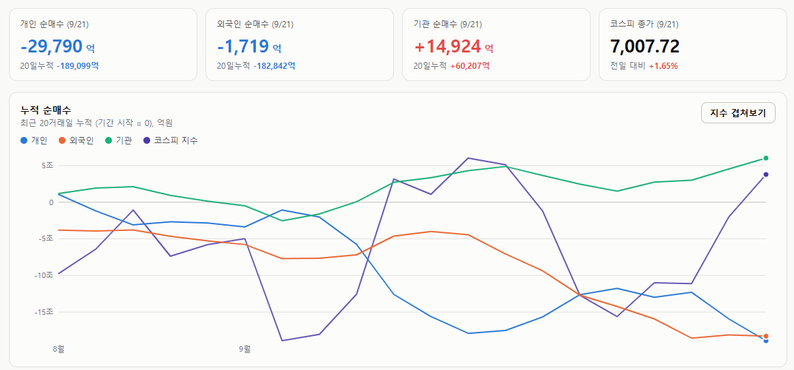
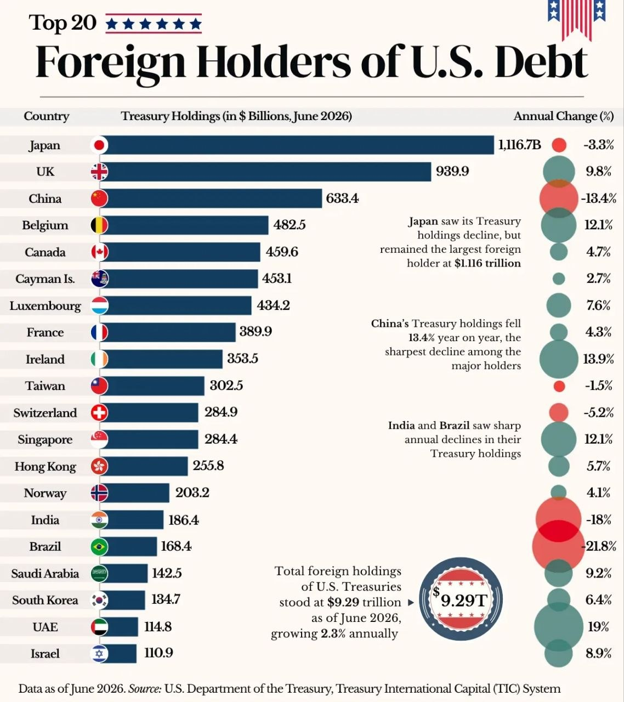

매일의 주도주 정리를 위해 기록합니다.
연속적으로 나온 종목들 또는 상승 후 조정받는 종목 위주로 리서치 해보시면 좋을 것 같습니다.


*오늘의 퀀트픽으로는 '티에스이' 입니다.
연속종목으로 삼성전자(2회), 삼화콘덴서(2회), 심텍(2회) 입니다.
시장이 회복하면서 필터링 되는 종목들이 늘어가기 시작했네요:)
#주도섹터
반도체 메가 캡 및 테스트·장비
주요 종목: 삼성전자(+5.38%), 삼성전자우(+5.64%), 뉴파워프라즈마(+17.30%), 티에스이(+10.91%), 심텍(+3.81%), SK하이닉스(+0.59%), 삼성전기(+2.95%).
분석: 반도체와반도체장비 업종이 +3.04% 상승했습니다. 삼성전자가 하루에만 약 5.9조 원의 거래대금을 폭발시키며 2일 연속 상승세를 이어갔고, 뉴파워프라즈마(+17.30%)와 티에스이(+10.91%) 등 중소형 테스트·장비주까지 매수세가 확산되며 섹터 랠리를 연출했습니다.
건강관리기술 및 복합유틸리티
주요 종목: 스카이랩스, 네오사피엔스(+243.00%), 지역난방공사, 두산에너빌리티(+0.47%), 한국전력(+0.33%).
분석: 건강관리기술 업종이 +7.12%, 복합유틸리티 업종이 +4.14% 급등하며 업종 상승률 1, 2위를 차지했습니다. 네오사피엔스의 폭등 등 개별 바이오·AI 테마에 투기적 유동성이 강하게 붙었으며, 유틸리티 섹터는 안정적인 전력망 수요를 바탕으로 상승 방어에 성공했습니다.
#조정섹터
자동차 대표주 및 통신·전력 일부
주요 종목: 현대차(-1.64%), 현대모비스(-1.58%), 대한전선(-5.56%), 에너지장비(-3.05%), 통신장비(-1.98%).
분석: 반도체와 헬스케어로 유동성이 쏠림에 따라 자동차 대표주(현대차, 현대모비스)가 동반 약세를 기록했습니다. 전일까지 급등세를 보였던 대한전선(-5.56%)과 통신장비(-1.98%) 섹터에서도 단기 매물 출회가 이어졌습니다.
#수급동향

코스피 지수는 +1.65% 급등한 7,007.72로 마감하며 7,000선 고지에 재안착했습니다. 코스닥 지수 역시 외인·기관의 일부 매물 출회에도 불구하고 개인 매수세와 헬스케어 강세에 힘입어 +1.11% 상승한 836.27로 마감했습니다.
유가증권시장에서 기관 투자자가 1조 4,924억 원(20일 누적 +6조 207억 원)을 순매수하며 지수 상승을 견인했습니다. 반면 개인 투자자는 2조 9,790억 원(20일 누적 -18조 9,099억 원), 외국인 투자자는 1,719억 원(20일 누적 -18조 2,842억 원)을 각각 순매도했습니다.
미 국채 이탈이 아니라 교체 — 데이터가 말하는 진짜 변화

"중국이 미국 국채를 팔고 있다"는 뉴스가 나올 때마다 "달러 패권이 흔들린다"는 해석이 따라붙습니다. 그런데 6월 기준 미국 재무부 자료를 보면 그림이 다릅니다. 외국인의 미 국채 보유 총액은 9.29조 달러로 1년 전보다 2.3% 늘었습니다. 누군가 팔았지만 누군가는 더 샀다는 뜻입니다. 중요한 건 총액이 아니라 누가 팔고 누가 샀느냐입니다.
① 파는 쪽 — 전통적 큰손들
국가 보유액 (억 달러) 연간 변화 일본 11,167 -3.3% 중국 6,334 -13.4% 대만 3,025 -1.5% 스위스 2,849 -5.2% 인도 1,864 -18.0% 브라질 1,684 -21.8%
줄이는 쪽의 공통점이 있습니다. 각국 중앙은행과 국부펀드입니다. 이들은 외환보유고를 운용하기 위해 미 국채를 삽니다. 수익률이 얼마든 '안전하니까' 사는 매수자죠. 중국은 관세 전쟁과 달러 자산 동결 위험을 의식해 국채를 줄이고 금을 늘려왔고, 인도와 브라질도 외환보유고를 다변화하고 있습니다. 일본은 엔화 방어에 달러를 쓰느라 줄였습니다.
② 사는 쪽 — 금융허브와 산유국
국가 보유액 (억 달러) 연간 변화 영국 9,399 +9.8% 벨기에 4,825 +12.1% 룩셈부르크 4,342 +7.6% 아일랜드 3,535 +13.9% UAE 1,148 +19.0% 사우디 1,425 +9.2%
늘리는 쪽도 공통점이 있습니다. 금융허브와 중동 산유국입니다. 그런데 여기서 한 가지를 알아야 합니다. 케이맨제도(4,531억), 룩셈부르크(4,342억), 아일랜드(3,535억)는 인구 수백만의 작은 나라인데 한국(1,347억)의 3배를 들고 있습니다. 이 나라들이 직접 사는 게 아닙니다. 헤지펀드와 역외펀드의 등록지라서, 그들이 산 국채가 이 나라 이름으로 잡히는 겁니다. 영국·벨기에도 상당 부분 마찬가지입니다.
산유국은 다른 이유입니다. 유가가 100달러를 넘으면서 오일머니가 쌓였고, 그 돈이 미 국채로 흘러들었습니다. UAE의 +19%가 그 결과입니다.
③ 그래서 무엇이 달라지나 — 매수자의 '성격'
여기가 핵심입니다. 팔고 사는 주체가 바뀌면서 미 국채 매수자의 성격 자체가 바뀌고 있습니다.
중앙은행·국부펀드: 수익률에 둔감합니다. 금리가 4%든 5%든 외환보유고는 어딘가에 둬야 하니 삽니다. 시장이 흔들려도 잘 안 팝니다.
헤지펀드·역외펀드: 수익률에 민감합니다. 돈이 되면 사고, 안 되면 팝니다. 레버리지를 쓰기 때문에 시장이 흔들리면 강제로 팔아야 할 때도 있습니다.
즉 미 국채 시장이 '안정적이고 둔감한 매수자'에서 '예민하고 변덕스러운 매수자'로 손바뀜하고 있는 겁니다. 이게 왜 중요할까요.
첫째, 완충 장치가 얇아집니다. 예전엔 시장이 흔들려도 중앙은행이라는 '묵묵한 매수자'가 받쳐줬습니다. 그 손이 줄어들면 같은 충격에도 금리가 더 크게 튑니다. 앞서 텀프리미엄 글에서 "해외 보유자의 국채 비중 축소가 텀프리미엄 상승의 구조적 요인"이라고 썼는데, 그 메커니즘이 이겁니다. 불확실성을 견뎌줄 손이 줄면, 남은 매수자들은 그 불확실성에 대해 웃돈을 요구합니다.
둘째, 시장이 더 잘 흔들립니다. 헤지펀드의 상당수는 현물 국채를 사고 선물을 파는 '베이시스 트레이드'를 수십 배 레버리지로 굴립니다. 평소엔 조용하지만, 변동성이 튀면 한꺼번에 청산되며 국채 시장이 급변동합니다. 2020년 3월과 2023년 가을에 실제로 그런 일이 있었습니다. 매수자가 예민할수록 이런 연쇄 청산의 방아쇠는 가벼워집니다.
④ 다만 오해하지 말아야 할 것
이 데이터를 "달러 패권 붕괴"로 읽으면 과장입니다. 총액은 늘었고, 중국이 줄인 만큼을 다른 곳이 채웠습니다. 미 국채를 대체할 만큼 크고 유동적인 시장은 여전히 없습니다. 중국이 파는 건 '달러를 버려서'라기보다 '동결될까 봐 분산하는 것'에 가깝고, 그 돈의 일부는 금으로 갔습니다.
정확한 표현은 이렇습니다 — 미 국채의 수요는 사라지지 않았지만, 수요의 '질'이 바뀌었다. 같은 9조 달러라도 중앙은행이 들고 있을 때와 헤지펀드가 들고 있을 때는 시장의 안정성이 다릅니다.
정리하면, 미 국채 시장에서 지금 벌어지는 일은 '이탈'이 아니라 '교체'입니다. 참을성 있는 매수자가 나가고 예민한 매수자가 들어오는 중입니다. 이 표가 말해주는 건 금리가 얼마까지 오를지가 아닙니다. 같은 뉴스에도 금리가 더 크게 출렁일 것이라는 점입니다. 앞서 "금리는 높이가 아니라 흔들림으로 시장을 무너뜨린다"고 썼는데, 그 흔들림을 키우는 구조적 이유가 여기 있습니다. 앞으로 국채 시장을 볼 때 금리 수준만큼 MOVE 지수 같은 변동성 지표를 함께 봐야 하는 이유입니다.
이번 한주도 화이팅입니다!